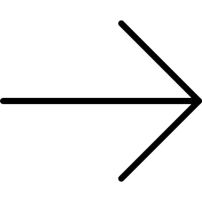

<ofc-header-shared></ofc-header-shared>

<div style="margin-top:25px;" class="container">
  <div class="jumbotron">
    <div style="width:100%" class="btn-group" role="group" aria-label="Basic example">
      <button (click)="selectedFilterOption = 'top'" (click)="projectsObjFiltered = sortProjectsTop(projectsObjFiltered)" style="width:50%" type="button" class="btn btn-default"><h5> Top</h5> </button>
      <button (click)="selectedFilterOption = 'new'" (click)="projectsObjFiltered = sortProjectsNew(projectsObjFiltered)" style="width:50%" type="button" class="btn btn-default"><h5>New </h5></button>
    </div>
    <input (keyup)="filterByName(searchInput)" (change)="filterByName(searchInput)" [(ngModel)] = "searchInput" type="text" class="form-control" aria-label="By name" placeholder="Project name">
  </div>

  <br>
  <a> 1" (click)="currentPage = currentPage - 1" style="margin-top:-40px; margin-left:5%; margin-right:5px; max-height: 25px; position: absolute; left:5px;" src="../../../assets/img/arrow-left-black.png"></a>
  <a></a>

  <div *ngIf="projectsObjFiltered?.length == 0">
    <div style="height: 100px"></div>
    <div style="height: 100px"></div>
    <ofc-loading></ofc-loading>
    <div style="height: 250px"></div>
  </div>

  <div class ="card-columns">
    <div style *ngFor="let crtObject of pagination(projectsObjFiltered, currentPage, numberOfNotificationsPerPage)" >
      <ofc-projectView [post]="crtObject" [showDetailsButton] = "true"></ofc-projectView>
      <br><br>
    </div>
  </div>


</div>
<ofc-footer></ofc-footer>
